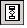
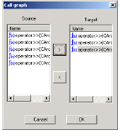
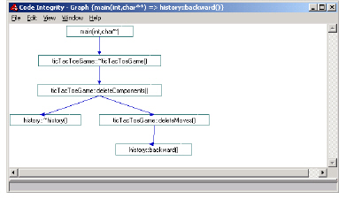

Opening a Call Graph
1 In the Results window, select a set of functions.
2 Do one of the following:
• Select View > Graph.
• Click .
A Call graph dialog box appears.

The Graph dialog box enables you take a set of selected functions from the model browser and determine which of the functions serve as source or target in your function query.
Note: The Graph dialog box accepts selected functions from the Results window, but not from both. If you want to use functions from both columns, select the functions in the model browser, create a group, display the group’s members, and select the desired functions from among the resulting display.
3 Use the arrow buttons to move functions between the two columns (Graph allows multiple functions in both columns). This defines your function query for the DIScover path-mapping process.
4 Click OK.
DIScover warns you that call graph relations calculations can take a long time.
5 To start the path-mapping process, click Yes.
DIScover looks at the source and target functions to see if there are paths between them. If DIScover finds that there is at least one valid path between a specified source and target function set, DIScover:
• discards those functions that do not lie on a path between any source and target function (removes them from the Graph dialog box and excludes them from the resulting output)
• identifies all functions that lie on a path between any source and target function, removes them from the Graph dialog box, and generates text (ASCII) or visual (View window) output identifying all existing paths, including the source (root) and target (endpoint) functions
The functions that remain in the Source and Target columns of the Graph dialog box are the logical roots and endpoints of that path (unless DIScover does not find a path for your function query, in which case no functions remain in the Graph dialog box).
If there is no path for your function query, DIScover displays an error message.
If DIScover finds a path for your function query, it builds a graphical view similar to a Tree diagram. The resulting diagram shows every existing path from the source function(s) to the target function(s).

Each function, including arguments, appears as a node within a blue hexagon. Lines between each hexagon indicate the path.
When you move the mouse pointer over a node or relation line, the function’s definition appears in the output buffer at the bottom of the View window.
Note: If your function query includes two complete yet separate paths (two groups of source and target functions that have no relations between the sets), DIScover displays both sets in the same Graph view.
If you click Save to File and specified functions with a path in the Graph dialog box, DIScover creates an ASCII text file, such as the following example:
{Board::clearSquare(location &)}
|E| = 2
0. Board::validLocation(location &)
1. location::y()
|E| = 2
0. Board::validLocation(location &)
1. location::x()
[2]
|
Element |
Description |
|
1 |
Source function |
|
2 |
Cardinality of edges |
|
3 |
Function in path |
|
4 |
Target function |
|
5 |
Total number of paths |
A graph report starts with the source function. Under it falls the cardinality of edges, showing you how many functions there are to a path, where each edge is a function. The total number of edges is equal to the number of functions in the path after the target function.
The final function in the path is the target. The total number of paths reported reflects how many times the path branches between a source and its targets.